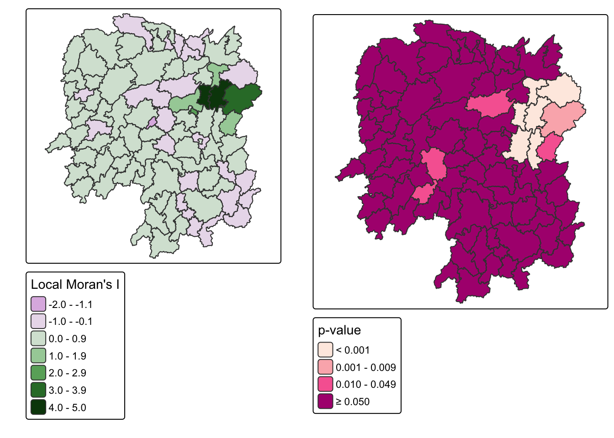
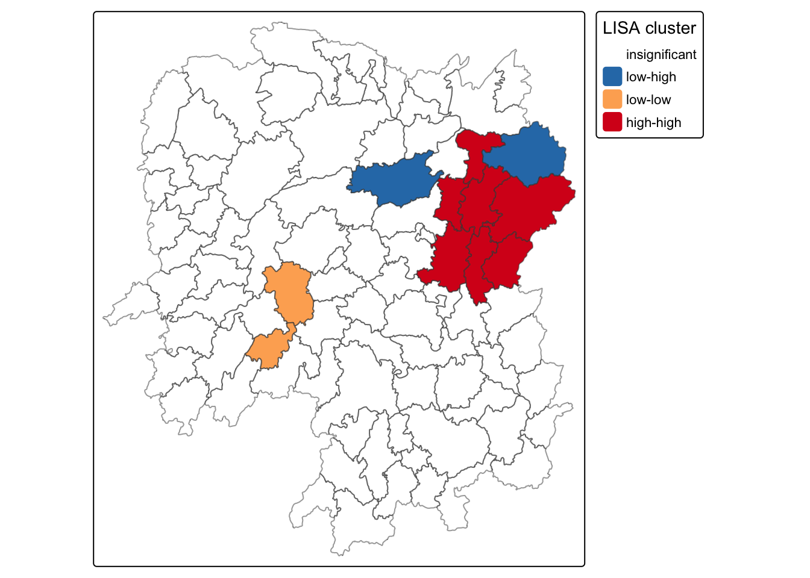
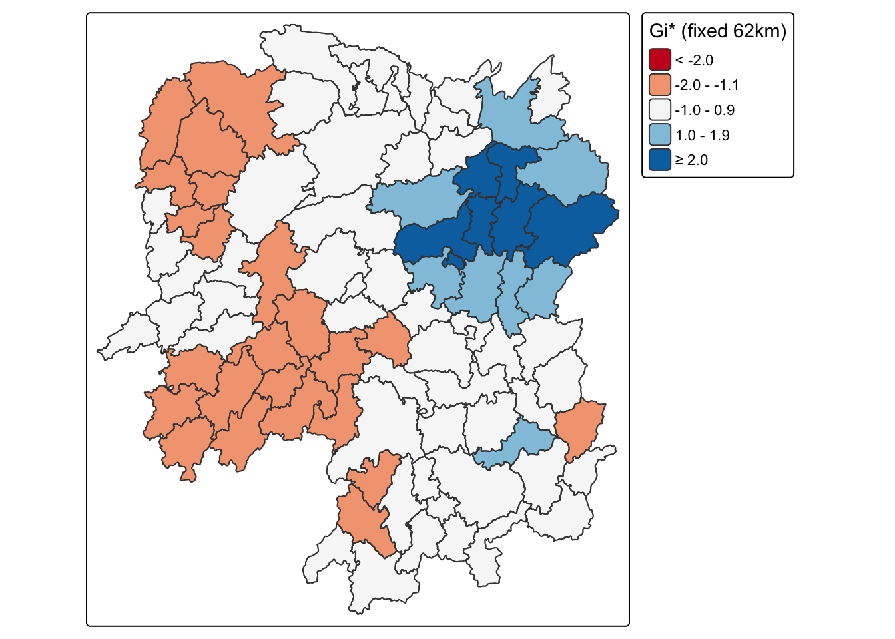
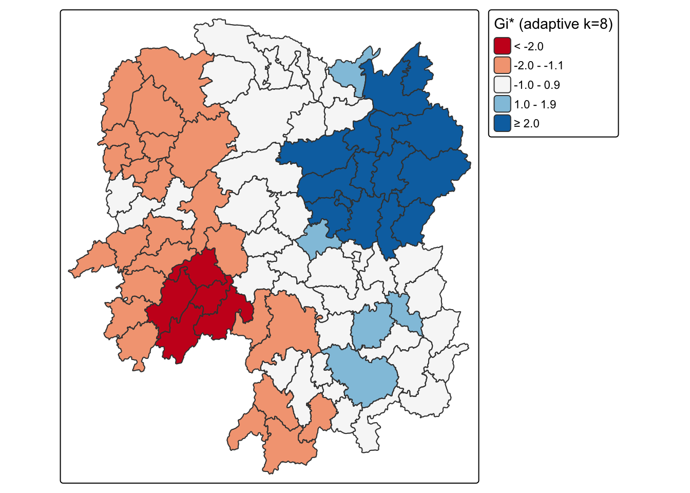

pacman::p_load(sf, spdep, tmap, tidyverse, knitr)Local Measures of Spatial Autocorrelation
HANDS-ON EXERCISE 5 / PART 02
R spdep LISA Getis-Ord Gi* Cluster maps
This exercise follows Local Measures of Spatial Autocorrelation, in the Spatial Weights block of the course.
1. Overview
Part 01 established that Hunan’s GDP per capita is spatially clustered: Moran’s I of 0.3007 with p near 1e-06. That is one number for 88 counties, and it cannot say where the clustering is.
This part decomposes it. Local Moran’s I (LISA) returns a statistic per county and classifies each into high-high, low-low, high-low or low-high. Getis-Ord Gi* asks a different question again: is this neighbourhood’s total unusually high or low?
I expected the local maps to be a more detailed version of the global result. They are not, and the gap between them is the most useful thing here. I also found an error in the reference code along the way, and it inverted the finding.
2. Getting Started
Same packages and the same Hunan data as Part 01, re-imported so this page stands alone.
hunan <- st_read(dsn = "data/geospatial", layer = "Hunan")Reading layer `Hunan' from data source
`/Users/jedidiahasaf/Downloads/School/ISSS626/coursework-website/Hands-on_Ex/Hands-on_Ex05/data/geospatial'
using driver `ESRI Shapefile'
Simple feature collection with 88 features and 7 fields
Geometry type: POLYGON
Dimension: XY
Bounding box: xmin: 108.7831 ymin: 24.6342 xmax: 114.2544 ymax: 30.12812
Geodetic CRS: WGS 84hunan2012 <- read_csv("data/aspatial/Hunan_2012.csv")
hunan <- left_join(hunan, hunan2012, by = c("County" = "County")) %>%
select(1:4, 7, 15)wm_q <- poly2nb(hunan, queen = TRUE)
rswm_q <- nb2listw(wm_q, style = "W", zero.policy = TRUE)Queen contiguity, row-standardised, averaging 5.09 neighbours per county.
3. Local Indicators of Spatial Association
The global tests say clustering exists. They cannot say where. LISA decomposes Moran’s I into one value per county.
3.1 Computing Local Moran’s I
fips <- order(hunan$County)
localMI <- localmoran(hunan$GDPPC, rswm_q)
head(localMI) Ii E.Ii Var.Ii Z.Ii Pr(z != E(Ii))
1 -0.001468468 -2.815006e-05 4.723841e-04 -0.06626904 0.9471636
2 0.025878173 -6.061953e-04 1.016664e-02 0.26266425 0.7928094
3 -0.011987646 -5.366648e-03 1.133362e-01 -0.01966705 0.9843090
4 0.001022468 -2.404783e-07 5.105969e-06 0.45259801 0.6508382
5 0.014814881 -6.829362e-05 1.449949e-03 0.39085814 0.6959021
6 -0.038793829 -3.860263e-04 6.475559e-03 -0.47728835 0.6331568hunan.localMI <- cbind(hunan, localMI) %>%
rename(Pr.Ii = Pr.z....E.Ii..)3.2 Mapping Local Moran’s I and its p-values
localMI.map <- tm_shape(hunan.localMI) +
tm_polygons("Ii", fill.scale = tm_scale_intervals(style = "pretty"),
fill.legend = tm_legend(title = "Local Moran's I")) +
tm_borders(col_alpha = 0.5)
pvalue.map <- tm_shape(hunan.localMI) +
tm_polygons("Pr.Ii",
fill.scale = tm_scale_intervals(
breaks = c(-Inf, 0.001, 0.01, 0.05, Inf),
values = "brewer.-rd_pu"),
fill.legend = tm_legend(title = "p-value")) +
tm_borders(col_alpha = 0.5)
tmap_arrange(localMI.map, pvalue.map, asp = 1, ncol = 2)
Only 11 of 88 counties reach significance at the 0.05 level.
3.3 LISA Cluster Map
The cluster map classifies each significant county into one of four quadrants. This is the code the chapter gives.
quadrant <- vector(mode = "numeric", length = nrow(localMI))
hunan$lag_GDPPC <- lag.listw(rswm_q, hunan$GDPPC)
DV <- hunan$lag_GDPPC - mean(hunan$lag_GDPPC)
LM_I <- localMI[, 1] - mean(localMI[, 1])
signif <- 0.05
quadrant[DV < 0 & LM_I > 0] <- 1 # low-high
quadrant[DV > 0 & LM_I < 0] <- 2 # high-low
quadrant[DV < 0 & LM_I < 0] <- 3 # low-low
quadrant[DV > 0 & LM_I > 0] <- 4 # high-high
quadrant[localMI[, 5] > signif] <- 0Before mapping it I checked the output against the underlying values, and it does not survive that check.
lab <- c("insignificant", "low-high", "high-low", "low-low", "high-high")
tibble(County = hunan$County,
GDPPC = hunan$GDPPC,
lag = round(hunan$lag_GDPPC),
label = lab[quadrant + 1]) %>%
filter(quadrant != 0) %>%
arrange(label, -GDPPC) %>%
kable()| County | GDPPC | lag | label |
|---|---|---|---|
| Changsha | 88656 | 41364 | high-high |
| Wangcheng | 70666 | 45651 | high-high |
| Liuyang | 63118 | 43747 | high-high |
| Miluo | 42497 | 47383 | high-high |
| Liling | 41491 | 42324 | high-high |
| Zhuzhou | 27589 | 47346 | high-high |
| Xiangtan | 27060 | 44940 | high-low |
| Taojiang | 19509 | 35934 | high-low |
| Pingjiang | 17252 | 55158 | high-low |
| Wugang | 12112 | 11566 | low-high |
| Longhui | 9572 | 12297 | low-high |
Wugang has a GDPPC of 12,112 against a provincial mean of 24,405, and its neighbours average 11,566. A poor county surrounded by poor counties is the definition of low-low. The code labels it low-high.
ImportantThe chapter’s quadrant code is wrong, and it inverts the finding
The second axis in that code is LM_I, the local Moran statistic itself. That cannot work, and the reason is in the formula. Local Moran’s I for county i is
\[I_i = z_i \sum_j w_{ij} z_j\]
a product of the county’s own standardised deviation and its neighbours’. When both are positive, high-high, the product is positive. When both are negative, low-low, the product is also positive. Local Moran’s I is positive for high-high and low-low alike, and negative for high-low and low-high alike. Using it as an axis therefore conflates exactly the pairs the quadrant map exists to separate.
The correct second axis is the county’s own deviation from the mean, GDPPC - mean(GDPPC), which is what a Moran scatterplot actually plots.
quadrant2 <- vector(mode = "numeric", length = nrow(localMI))
X <- hunan$GDPPC - mean(hunan$GDPPC)
Y <- hunan$lag_GDPPC - mean(hunan$lag_GDPPC)
quadrant2[X < 0 & Y > 0] <- 1 # low-high
quadrant2[X > 0 & Y < 0] <- 2 # high-low
quadrant2[X < 0 & Y < 0] <- 3 # low-low
quadrant2[X > 0 & Y > 0] <- 4 # high-high
quadrant2[localMI[, 5] > signif] <- 0tibble(Quadrant = lab,
`Chapter code` = map_int(0:4, ~sum(quadrant == .x)),
`Corrected` = map_int(0:4, ~sum(quadrant2 == .x))) %>%
kable()| Quadrant | Chapter code | Corrected |
|---|---|---|
| insignificant | 77 | 77 |
| low-high | 2 | 2 |
| high-low | 3 | 0 |
| low-low | 0 | 2 |
| high-high | 6 | 7 |
Five of the 11 significant counties change label. Low-low goes from 0 to 2, high-low from 3 to 0, and high-high from 6 to 7.
I had written a whole paragraph about how Hunan has no low-low clusters at all before I ran this check. It was an artefact of the code, not a property of Hunan. That is the uncomfortable part: the wrong version produced a more interesting story, and I would have submitted it.
hunan.localMI$quadrant <- quadrant2
colours <- c("#ffffff", "#2c7bb6", "#abd9e9", "#fdae61", "#d7191c")
tm_shape(hunan.localMI) +
tm_fill("quadrant",
fill.scale = tm_scale_categorical(
values = colours[sort(unique(quadrant2)) + 1],
labels = lab[sort(unique(quadrant2)) + 1]),
fill.legend = tm_legend(title = "LISA cluster")) +
tm_borders(col_alpha = 0.5)
The corrected classification of the 11 significant counties:
| Quadrant | Counties | Count |
|---|---|---|
| High-high | Changsha, Wangcheng, Liuyang, Miluo, Liling, Zhuzhou, Xiangtan | 7 |
| Low-low | Wugang, Longhui | 2 |
| Low-high | Taojiang, Pingjiang | 2 |
| High-low | none | 0 |
| Insignificant | 77 |
NoteWhat the corrected map actually says
The asymmetry I thought I had found is still there, just smaller than the buggy version claimed. Seven counties form high-high clusters against two low-low. Wealth clusters about three times as often as poverty does.
There are also zero high-low counties, meaning no rich county sits isolated in a poor neighbourhood. Wealth in Hunan does not appear alone. Every significantly rich county has rich neighbours, which is a stronger statement about spillover than Moran’s I of 0.30 conveys on its own.
And 77 of 88 counties are locally insignificant. The global test returned p near 1e-06, yet seven eighths of the province is indistinguishable from a random arrangement. A significant global statistic does not mean most places participate in the pattern.
4. Hot and Cold Spot Analysis with Getis-Ord Gi*
LISA asks whether a county resembles its neighbours. Gi* asks whether a neighbourhood’s total is unusually high or low, and answers in z-score units.
4.1 Deriving the Weights
coords <- st_coordinates(st_centroid(st_geometry(hunan)))
k1 <- knn2nb(knearneigh(coords))
k1dists <- unlist(nbdists(k1, coords, longlat = TRUE))
summary(k1dists) Min. 1st Qu. Median Mean 3rd Qu. Max.
24.79 32.56 38.00 39.07 44.52 61.81
WarningI walked into the same trap I documented last exercise
My first run passed st_centroid() output straight into knearneigh() and got a maximum first-neighbour distance of 0.60 instead of 61.81. That is the exact sfc versus coordinate-matrix mistake I wrote a callout about in Exercise 4, and I made it again within a fortnight.
Writing the lesson down was evidently not the same as learning it. What saved me was the habit the last one left behind: I looked at the number, knew 0.6 km was impossible for Chinese counties, and checked. The value of documenting a mistake was not that I stopped making it, but that I now recognise the symptom on sight.
Maximum first-nearest-neighbour distance is 61.81 km, the cut-off that guarantees every county at least one neighbour.
4.2 Gi* with Fixed Distance Weights
Gi* includes the county itself, which is what include.self() is for and what the star in the name denotes.
d62 <- dnearneigh(coords, 0, 61.81, longlat = TRUE)
gi.fixed <- localG(hunan$GDPPC, nb2listw(include.self(d62), style = "B"))
hunan.gi <- cbind(hunan, as.matrix(gi.fixed)) %>%
rename(gstat_fixed = as.matrix.gi.fixed.)tm_shape(hunan.gi) +
tm_polygons("gstat_fixed",
fill.scale = tm_scale_intervals(
breaks = c(-Inf, -2, -1, 1, 2, Inf),
values = "brewer.-rd_bu"),
fill.legend = tm_legend(title = "Gi* (fixed 62km)")) +
tm_borders(col_alpha = 0.5)
gi_f <- as.numeric(gi.fixed)
tibble(County = hunan$County, GDPPC = hunan$GDPPC, `Gi*` = round(gi_f, 2)) %>%
arrange(-`Gi*`) %>% head(7) %>% kable()| County | GDPPC | Gi* |
|---|---|---|
| Wangcheng | 70666 | 5.81 |
| Changsha | 88656 | 5.43 |
| Xiangyin | 33983 | 4.30 |
| Shaoshan | 55570 | 3.77 |
| Liuyang | 63118 | 3.75 |
| Ningxiang | 62202 | 3.54 |
| Miluo | 42497 | 2.50 |
Gi* runs from -1.90 to +5.81. Seven counties exceed +2. Not one falls below -2.
NoteXiangyin shows what Gi* is actually measuring
Xiangyin has a GDPPC of 33,983, which ranks 13th of 88. Its Gi* ranks 3rd, behind only Wangcheng and Changsha.
Its neighbours explain it: Wangcheng at 70,666 and Miluo at 42,497, alongside Yuanjiang, Yueyang and Taojiang. Gi* scores the neighbourhood sum including the county, so Xiangyin inherits a large score from company it keeps rather than from its own output. LISA, by contrast, leaves Xiangyin insignificant at p = 0.051.
The two statistics are answering different questions rather than giving two views of one answer. If the task is siting infrastructure to serve concentrated economic mass, Gi* is the right tool. If the task is finding counties that have fallen behind their own neighbours, LISA is.
4.3 Gi* with Adaptive Distance Weights
knn8 <- knn2nb(knearneigh(coords, k = 8))
gi.adaptive <- localG(hunan$GDPPC, nb2listw(include.self(knn8), style = "B"))
hunan.gi$gstat_adaptive <- as.numeric(gi.adaptive)tm_shape(hunan.gi) +
tm_polygons("gstat_adaptive",
fill.scale = tm_scale_intervals(
breaks = c(-Inf, -2, -1, 1, 2, Inf),
values = "brewer.-rd_bu"),
fill.legend = tm_legend(title = "Gi* (adaptive k=8)")) +
tm_borders(col_alpha = 0.5)
gi_a <- as.numeric(gi.adaptive)
tibble(Scheme = c("Fixed 62 km", "Adaptive k = 8"),
`Avg neighbours` = c(round(mean(card(d62)), 2), 8),
Minimum = round(c(min(gi_f), min(gi_a)), 2),
Maximum = round(c(max(gi_f), max(gi_a)), 2),
`Hot (> +2)` = c(sum(gi_f > 2), sum(gi_a > 2)),
`Cold (< -2)` = c(sum(gi_f < -2), sum(gi_a < -2))) %>%
kable()| Scheme | Avg neighbours | Minimum | Maximum | Hot (> +2) | Cold (< -2) |
|---|---|---|---|---|---|
| Fixed 62 km | 3.64 | -1.90 | 5.81 | 7 | 0 |
| Adaptive k = 8 | 8.00 | -2.33 | 4.92 | 15 | 5 |
ImportantWhether Hunan has any cold spots at all depends on the weights
The fixed-distance scheme finds 7 hot spots and 0 cold spots. The adaptive scheme finds 15 hot spots and 5 cold spots. Same variable, same province, same threshold.
The mechanism is the neighbour count. The fixed 62 km band averages 3.64 neighbours, and in the sparse western counties it gives very few. A Gi* z-score built from three units cannot reach far from zero, so the poor west never crosses -2. Forcing k = 8 gives those same counties a wider window, their deficit accumulates over more neighbours, and cold spots appear.
Pingjiang makes the point sharply. Its GDPPC is 17,252, below the provincial median of 20,433, so it is a genuinely poor county. Under the fixed band its Gi* is +1.95; under adaptive k = 8 it is +4.61, which would be reported as a strong hot spot. The corrected LISA classifies it as low-high, a poor county surrounded by wealth, which is the honest description.
“Hunan has no economic cold spots” is a sentence I could have written from the fixed-band map alone, and it would have been an artefact of the neighbour definition. Report the weights with the result, every time.
5. What I Take Away
I caught a real error in the reference code, and only because I checked the output against the data. The chapter’s quadrant assignment uses local Moran’s I as an axis, and because that statistic is positive for high-high and low-low alike, it cannot separate them. Five of 11 significant counties were mislabelled, low-low was reported as empty when there are two, and three spurious high-low counties appeared. Running the code and mapping the result would have shown nothing wrong. Reading one row against its own values did.
The wrong answer was the more interesting one. “Hunan has no low-low clusters at all” is a better line than “seven high-high against two low-low”, and I had already written it. Findings that flatter the analysis deserve more scepticism than findings that complicate it, not less.
Global and local measures answer different questions. Part 01’s Moran’s I of 0.30 at p near 1e-06 sounds province-wide. Locally, 77 of 88 counties are indistinguishable from random and the pattern is carried by a minority around Changsha. A significant global statistic does not mean most places participate.
Two statistics can both be right and disagree. Xiangyin is 13th by GDPPC and 3rd by Gi*, and insignificant under LISA. Neither is broken; Gi* scores the neighbourhood and LISA scores the county against its neighbours. The choice belongs to the question being asked.
Weights are not a preliminary step. Whether Hunan has any cold spots at all flips between 0 and 5 on the neighbour definition alone. Exercise 4 presented weights as setup for the real analysis. They are part of the result.
And I repeated a documented mistake. The sfc versus coordinate-matrix trap cost me time in Exercise 4, I wrote it up carefully, and I made it again here. What had stuck was the sanity check rather than the rule, which is probably the realistic version of learning from a mistake.